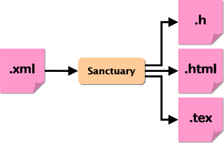

Sanctuary
概要
SanctuaryはXMLで記述したAPI仕様を入力として、C言語のヘッダファイルやドキュメント（HTMLとTeX）などを出力するツールです。

APIリファレンスを自動生成するツールとしては、DoxyGenやjavadocなどが有名です。これらのツールはコメントに特別なアノテーションを埋め込んだソースコードからAPIリファレンスなどのドキュメントを自動的に生成します。
SanctuaryもAPIリファレンスを自動生成することができますが、さらに次のような特徴があります。
- ヘッダファイルの自動生成
- ヘッダファイルのコーディングスタイルが形式的である場合、開発者がそれに合わせてヘッダファイルを書くことは、機械的な作業を多く含みます。例えば、名前衝突防止のプレフィックス、二重インクルード防止マクロや、C++用マクロなどを必ず書くルールである場合、それは自動的に生成して欲しいでしょう。
- 重複のない記述
- 同様な記述を繰り返す場合に、XMLでは実体宣言、実体参照を利用して、重複する記述を避けることができます。しかし、コメントによるアノテーションではコピーアンドペーストの出番になるでしょう。また、細かいことですが、関数プロトタイプの引数名と、コメント内の
@paramアノテーションの引数名を合わせるといった作業も楽しいものではありません。コメントによるアノテーションには限界があるといえます。 - 名前空間の導入
- C言語には名前空間（ネームスペース）を制御する機能がない†ため、多くの場合は識別子にプレフィックスを付加するというコーディングスタイルを採用します。その結果、ソースコードはプレフィックスだらけになりがちです（例えば、JavaでStringを必ずjava.lang.Stringと書かなければならないとしたら、あなたは幸せでしょうか）。Javaのimport命令に相当するマクロを定義することで、C言語にもファイルスコープで名前空間を導入することができます。しかし、そうしたマクロを手作業で維持するのは困難でしょう。
- テスト用スタブの自動生成
逆にSanctuaryでは、XMLでAPIを記述するために独自の文法を学習する必要があります（DTDだけですべてを理解できれば学習の必要はありませんが...）。
† C++のusingやJavaのimportのように名前を省略する機能がC言語にはないという意味です。名前空間そのものはC言語にもあります。例えば、構造体などのタグ名の名前空間と、関数名などの識別子の名前空間は異なります。また、スコープによっても名前空間は異なります。